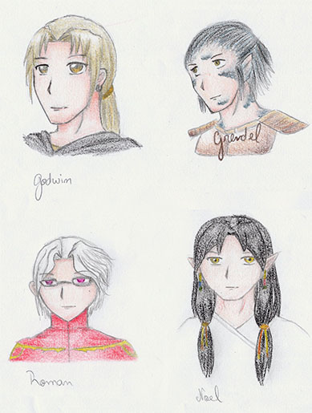

| My Interests | ||
|---|---|---|
| School | Hobbies | Other |
| Game Development | Role-playing (writing) | From Brazil |
| Computer Science | Video Games | Speak French |
| Computer Vision | Playing the piano | Learning Japanese |
Hi! I'm Yara, an exchange student from the University of Sao Paulo in Brazil. Back home, I'm majoring in Computer Science because my university doesn't have a game major, but here I'm part of the GDD major. I'll be staying for fall and spring semesters.
My greatest passion and most time consuming hobby is role-playing in written form. For those who don't know, it pretty much goes like this: you write what your characters do, and your partner replies with their characters' response. People sometimes do that in groups, but I tend to stick to one-on-one roleplays. My favorite one so far is a high fantasy roleplay that has been going on for three years now and has yielded more than 6000 pages for the main story (yes, I have no life lol) and hundreds of pages in side stories and spin-offs. We even have a wiki with a little less than 200 pages describing characters, countries, cultures and whatnot. /ramble
I also play the piano and violin, though it's been a long while since I last touched the latter :( I play mostly video game and anime music, and have a rarely updated Youtube channel where I post videos of myself playing some stuff on the piano. I really should post something new...
On the topic of video games, I enjoy RPGs that are heavily story-based above anything else. Dragon Age (love the lore, especially the mage part!), Heavy Rain, Tales of series, 999 and others, for example. I'm always looking for more, so let me know if you have any suggestions!
